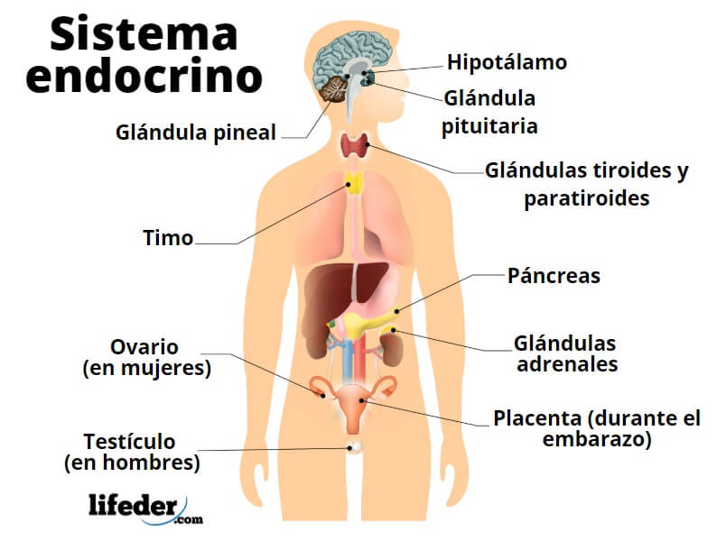

Foro Colegio Obregon
La fotosintesis

La fotosíntesis o función clorofílica es un proceso químico que consiste en la conversión de materia inorgánica a materia orgánica gracias a la energía que aporta la luz solar...
Articulo completo
Sistema endocrino

El sistema endocrino está formado por glándulas que fabrican hormonas. Las hormonas son los mensajeros químicos del organismo. Trasportan información e instrucciones de un conjunto de células a otro...
Articulo completo
Sistema nervioso

El sistema nervioso controla todo lo que haces; por ejemplo, la respiración, el caminar, lo que piensas y lo que sientes. Este sistema está compuesto por el cerebro, la médula espinal y todos los nervios del cuerpo...
Articulo completo